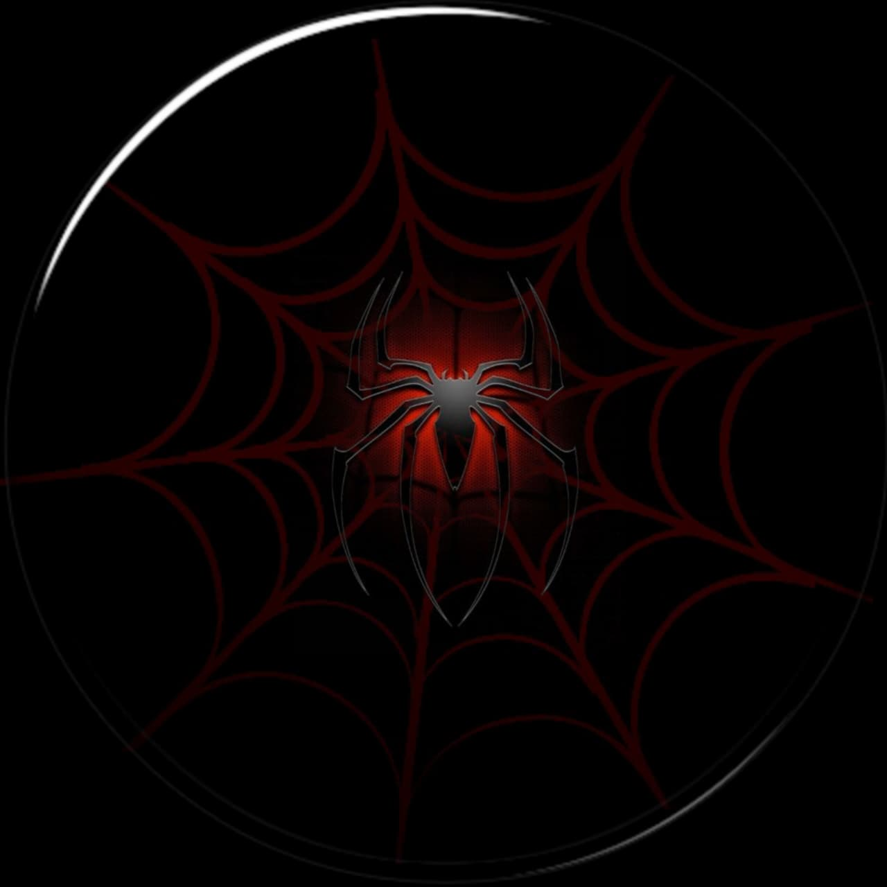

Story Paradise
Secrets, clues, and detective adventures
Detective Aryan received a strange call from the city library. The librarian was found unconscious inside a locked room. No windows were open. No spare key existed. But on the dusty floor, Aryan noticed fresh footprints leading to a bookshelf. Pulling one old book revealed a hidden tunnel behind the wall. Someone had escaped through a secret passage forgotten for decades.
Read MoreA priceless diamond necklace disappeared during a royal dinner party. Every guest claimed innocence. Detective Meera carefully observed the room. Then she noticed candle wax on one guest’s glove. The lights had gone out only once during dinner. Meera smiled quietly. The thief had hidden the necklace inside the melted candle stand.
Read MoreAt midnight, a train arrived at the station completely empty. Yet the ticket records showed over 200 passengers onboard. Inspector Ravi searched every compartment. In the last cabin, he found a single suitcase. Inside it was a map marked with red circles. Each location matched unsolved disappearances from the past ten years.
Read MoreEvery night at exactly 11:11 PM, the old clock tower stopped ticking for one minute. Town residents believed it was cursed. Curious journalist Nina climbed the tower one stormy night. Hidden behind the giant clock gears, she discovered a tiny room filled with letters. The letters exposed a mayor’s secret crimes buried for 30 years.
Read More© 2026 Web Spidey | All Rights Reserved